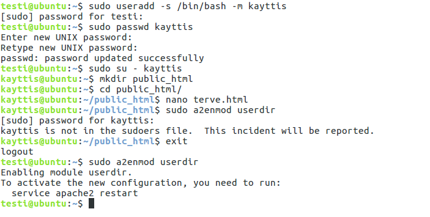
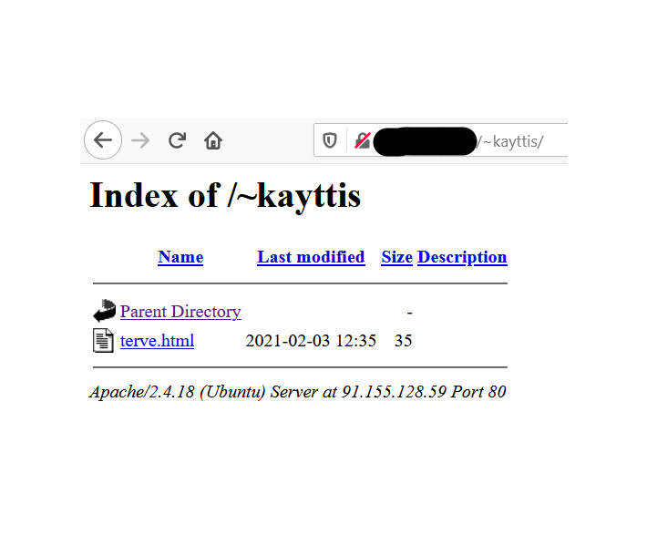
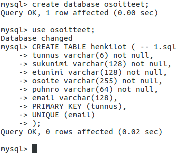

Tapio Kolehma
Käyttöjärjestelmät
Käyttöjärjestelmät
Linux:lla ja Windows:lla olen tehnyt peruskomentoja terminaalissa. Sitten Linuxin kanssa on tullut syvennyttyä enemmän palvelinpuolen ohjelmointiin. Virtuaalikoneessa olen pyörittänyt ubuntun serveriä jossa apachen webpalvelin mahdollistanut sen että localhostilla pääsee katsomaan selaimen kautta tekemisiä.
 
{kind=link}
{kind=link}
Kuvissa näkyy että olen ensin terminaalissa antanut komentoja ja luonut kansion, mihin olen tehnyt .html päätteisen sivun. Sitten vain apachen uudelleen käynnistys ja kuten toisesta kuvasta näkyy niin localhostilla pääsee kyseiselle sivulle.
Tietokannat
Tietokannoista tutuimmaksi on tullut MySQL, tämän lisäksi myös MariaDB ja HeidiSQL. Nämä ovat olleet helppo ottaa käyttöön tarvittaessa koska tietokannat toimivat samalla logiikalla. Joten kun yhtä osaa niin toisen opetteluun ei mene paljoa aikaa.
{kind=link}

Ensimmäisessä kuvassa luon MySQL:lään uuden taulun osoitteet, johon sitten myöhemmin laitan tietoa. Toisessa kuvassa MySQL kyselyllä haettu täytetty data tietokannasta.